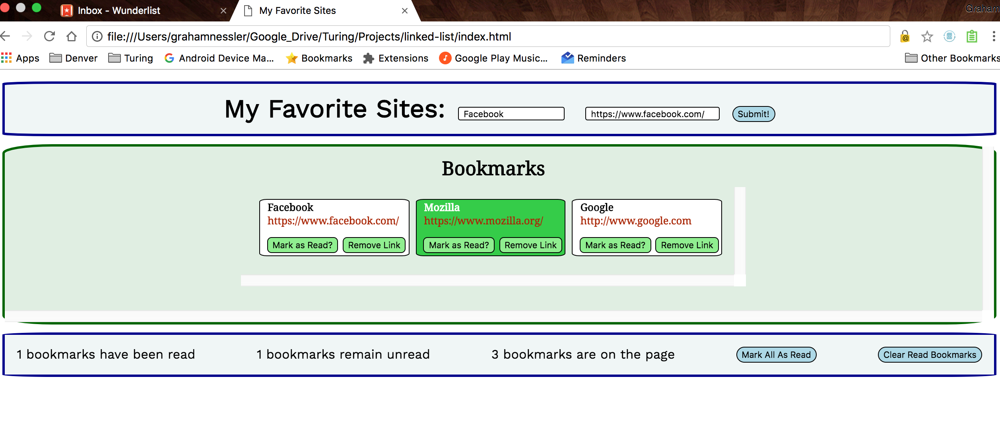

A "Linked List"
Posted on September 3, 2016

I just completed my second project at Turing, a "linked list" with fellow student Alex Pilewski. (I place the term "linked list" in quotes because while this was the official project title, this was not a true linked list in the sense that back-end developers would most likely understand the term.) Our project involved creating a site where the user could enter in a title and url of favorite sites. The program organizes the user's entries into bookmarks that can be toggle "read" and "unread". The user has the option of marking all bookmarks on the page as read, removing all bookmarks, and removing all read bookmarks. The program keeps track of the number of bookmarks on the page as well as the number of read and unread ones currently on the page.
Our biggest challenge was coordinating all of the functions to keep count of the read and unread bookmarks and all those currently on the page. I initially wrote some jQuery that used the global variable count = 0 and reassigned this variable when the user submitted a bookmark and removed a bookmark, but the addition of the functionality to keep track of read and unread bookmarks, and in particular the fact that the "Mark as Read" button within each bookmark toggled the class of "read", necessitated a different approach.
Alex and I discovered that we could replace the counter variable with a few jQuery functions that simply record the length of relevant classes to keep track of the various elements on the page. Go local over global--in coding as well as in shopping! I am proud that our project ended up with zero global variables, which as any seasoned JS developer knows can royally mess up a program. (You can check out my post on the "mother-in-law principle" for more details.)
At the end of the day, we created a functional program using jQuery, CSS, and HTML. Alex did the majority of the CSS, and I focused on the JavaScript. This project not only helped us improve out JavaScript and jQuery skills but also afforded us the opportunity to learn how to write focused, well-organized CSS by creating several logically-organized stylesheets. The project also enhanced our knowledge of semantic HTML. (See the project Github page for details.) I look forward to our next challenge!
Number Guesser Project with Kinan Whyte
Posted on August 25, 2016

I just finished constructing a number guesser programwith colleague Kinan Whyte during Module 1 at the Turing School of Software and Design, where I am a front-end engineering student. We created a program with basic functionality, albeit with a few bugs. Our program accepts a number from the user (default range 0-100) and generates a pseudo-random number which it compares to the user's number. The program tells the user whether his/her number is too low, too high, out of the acceptable range, or not a number (such as text). If the user correctly guesses the computer's number, the program regenerates another pseudo-random value and adjusts the max and min by +10 and -10 respectively. The program also accepts optional max and min values from the user. Upon user submission of these values, the program regenerates a pseudo-random within the new range.
Our main accomplishment was constructing an interactive quantitative program that responds to user input. We used JavaScript, CSS, and of course HTML in building this program. Kinan did most of the CSS and I wrote much of the JavaScript (though Kinan also made some crucial contributions in the latter area). We employed the Atom text editor to complete the project and made use of online resources such as a random number generator from MDN (the third from the top on the linked page), which was the basis for our number generator.
We learned a great deal from this project. We both significantly improved our JavaScript skills, particularly in the areas of interactions between functions, structuring a JavaScript page, and refactoring JS to make it more readable and logically organized. The major snags we confronted were struggles to fix parts of the program that one of us had "broken" in revisions and attempting to make the program store the pseudo-random number during sessions while also resetting it when the user wins or hits the "reset" button, which returns the game to its default state (we also included a "clear" button to clear the input box). We successfully worked through these challenges with the invaluable assistance of colleagues and teachers at Turing.
I also gained important experience in team collaboration, as this was my first partnered programming project. Overall, this was an important educational experience that I will build on in the future.
My New Cairn Terrier Site!
Posted on August 10, 2016.

Check out my new Cairn Terrier site! It's a tribute to the dog breed coded from scratch. There's also a fun quiz where you can see how strong of a "fit" you are with a Cairn.
Made it to Denver!
Posted on August 9, 2016.

I finally made it to Denver! It was a long 3-day drive, but I'm here. I'm excited for this new chapter and new start!
The above photo is of my host's two Westies. They are a joy to be around and make me miss Mal (my cat) a bit less.
Charleston Wedding (May 21, 2016)
Posted on June 3, 2016.

I had been meaning to post about this for a while, but never got around to it. I recently attended the beautiful wedding of my cousin, Bruce, to Darim, whom he met in the Army. It was a great event and a precious time for family to converge.
I was particularly happy to see my brother and mother there. I look forward to seeing the latter soon, when I return to Blacksburg!
All best wishes to Bruce and Darim!
Home Cooked Food
Posted on May 17, 2016

I had a very nice dinner with my relatives, Carl and Donna. They sure know how to cook a chicken! We went on a nice nature walk and then had dinner. It will be a shame to leave them when I leave Florida. You should check out their nursery! The above picture is their dog, Nia, a Welsh Corgi.
Congrats to Dan!
Posted on May 12, 2016

Congrats to my friend Dan, who will be teaching at the University of Michigan-Flint starting in the fall of 2016! I've known Dan since 2005, when we took a seminar together (remember Getting the Documents to Speak, Dan?). I am thrilled at his success and wish him and his family the best!
Congrats to Erik!
Posted on May 12, 2016
Congratulations to my friend Erik, who will be an Assistant Professor at the University of Central Oklahoma starting in Fall 2016! Erik has been a good friend since 2008, when I met him through my good friend and roommate at the time. Erik is not only a stellar scholar and teacher but also a sweet guy and is richly deserving of this opportunity. Good luck, Erik!!